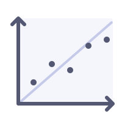

About Me
I am a Research Engineer at LaRAC - Laboratoire de Recherches sur les Apprentissages en Contexte at the Université Grenoble Alpes, France. I provide research support in the Psychology and Educational Science domain. Currently, I am part of team that is researching local disparities in guidance support in secondary schools and how this affects high school students aspirations. Previously, I've participated in the research projets: ExpeSigno and Eco-Sesa<\a> at the Université Grenoble Alpes in which we explored household behaviour in response to demand response incentives via a field experiment, as well as explorations of consumer behaviour in response to incentives via laboratory experiments. I was also involved in the ULHyS Project at the Université de Lorraine in which I applied a choice experiment to determine consumers' preferences for hydrogen energy storage as a way to integrate more renwable energies into the grid.
My research interests lie in using methods from behavioural and experimental economics to encourage greener practices at a time when the world is transitioning to a more sustainable way of life.
Research Interests
-
Experimental Economics
-
Consumer Behaviour
-

Econometrics
-
Energy Consumption
Publications
-
Demand response in the workplace: A field experiment.
Journal of Environmental Management, 341, 117992. -
Nudges and peak pricing: A common pool resource energy conservation experiment.
Journal of Behavioral and Experimental Economics, 101, 101928. -
Prices, information and nudges for residential electricity conservation: A meta-analysis.
Ecological Economics, 172, 106635.
Current Research
-
Consumer preferences for hydrogen energy storage: A choice experiment.
-
Loss aversion framing to incentivise small efforts for repetitive tasks.
Communications
2020
- May - GAEL Grenoble (online)
- May - ALISS Ivry sur Seine (online)
- Feb - PErSEUs Metz (invited speaker)
- Feb - GAEL Grenoble
2019
- Jul - BETA Nancy (invited speaker)
- May - Sciences Po Grenoble
2018
- Nov - FAEE Paris (invited speaker)
- Sep - University of Kent Canterbury (invited speaker)
- Sep - BIEE Oxford
- Jun - WCERE Gothenburg
- Jun - IAEE Groningen
- Mar - Université Grenoble Alpes
- Jan - University of St Gallen
2017
- Nov - AIEE Rome
- Nov - FAEE Paris
- Mar - Université Grenoble Alpes
2016
- May - Grenoble Applied Economics Laboratory
On My Thesis
Household electricity consumption behaviour:
A
meta-analysis and experimental approaches.
Supervised by
Daniel Llerena
and
Cédric Clastres.
Defended 3 May, 2019
I explore and analyse household and consumers’ preferences and behaviour with regard to their use of smart meters and dynamic pricing for managing their electricity consumption.
In particular, I look at how consumers behave and adapt in response to the different incentives that can be delivered via a smart meter, with the goal of reducing energy consumption and making residential energy demand more flexible.
This is done through an empirical analysis of the existing experimental literature, and via laboratory experiments to investigate consumer choices and behaviour in controlled settings.
Education
- 2019
-
PhD
Household electricity consumption behaviour:
A meta-analysis and experimental approaches. - 2015
-
Master
Economics and Statistics
- 2014
-
Master
Management
- 2011
-
Bachelor
Economics and French